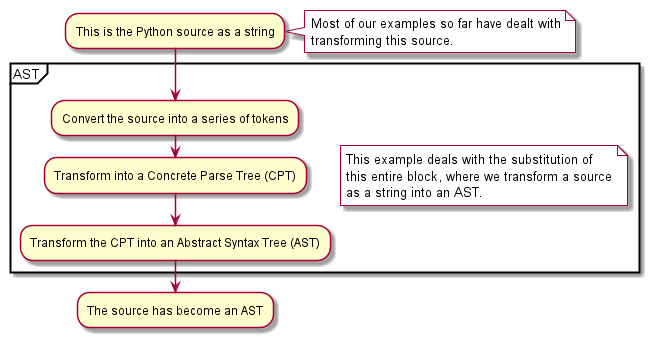

Summary
Demonstrates how to use an import hook to do custom parsing and create an Abstract Syntax Tree (AST)
So far, our examples have consisted of transforming the program source before Python created an AST, or transforming the AST after its creation by Python.
This example, created by Devin J. Pohly, demonstrates how we can bypass Python to create an AST.

Caution
This example cannot be combined with (most) other types of transformations.
Furthermore, the interactive console turns into a Polish expression calculator
and most Python syntax, including the use of exit(), becomes a SyntaxError.
Polish notation (AST creation)
Expressions in Polish (prefix) notation are written with each operator preceding its operands, allowing unambiguous expressions with no need for parentheses or precedence rules. For example:
>>> + 3 8
11
>>> * 2 + 1 4
10
>>> * + 2 1 4
12
>>> +*+*+*+
... 1 2 3 4 5 6 7
... 8
505
Each of these expressions is valid Polish notation, but none of them is accepted by the Python parser. Using an import hook, we can provide our own parsing step to construct the correct AST for the expression. This module also implements assignment in prefix form:
>>> = x 8
>>> x
8
>>> * x x
64